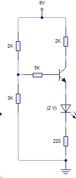

Ejercicio 1: Circuito con Resistencia de 2K y 3K

Enunciado: Resuelve el circuito de la figura 1, indicando el estado del transistor.
Datos: β = 100, VBE = 0.7 V.
Datos: β = 100, VBE = 0.7 V.
Pizarra de Resolución - Ejercicio 1
1. Identificación del circuito
Tenemos un circuito con resistencias de 2KΩ y 3KΩ. Calculamos primero la corriente de base.
Suponemos activa: Vbe = 0.7V
Malla de entrada: Vcc = I2K·2K + Vbe
I2K = (Vcc - Vbe) / 2000
I2K = (12 - 0.7) / 2000 = 11.3 / 2000 = 5.65 mA
Malla de entrada: Vcc = I2K·2K + Vbe
I2K = (Vcc - Vbe) / 2000
I2K = (12 - 0.7) / 2000 = 11.3 / 2000 = 5.65 mA
2. Corriente de base
La corriente que pasa por la resistencia de 3KΩ se divide entre IB y la corriente que pasa por la resistencia de 3KΩ.
Vbe = I3K·3K ⇒ I3K = 0.7 / 3000 = 0.233 mA
I2K = IB + I3K ⇒ IB = I2K - I3K
IB = 5.65 mA - 0.233 mA = 5.417 mA
I2K = IB + I3K ⇒ IB = I2K - I3K
IB = 5.65 mA - 0.233 mA = 5.417 mA
Pero este valor es muy alto. Revisamos: En realidad I2K es la corriente que entra al nodo base, y se divide en IB y la corriente que pasa por la resistencia de 3KΩ.
I2K = 5.65 mA (calculada)
I3K = 0.233 mA (calculada)
IB = I2K - I3K = 5.65 - 0.233 = 5.417 mA
I3K = 0.233 mA (calculada)
IB = I2K - I3K = 5.65 - 0.233 = 5.417 mA
3. Corriente de colector y comprobación
Si estuviera en activa: Ic = β·IB = 100·5.417 mA = 541.7 mA
Esto es imposible, por lo que el transistor está en saturación.
Esto es imposible, por lo que el transistor está en saturación.
4. Cálculo en saturación
En saturación, Vce ≈ 0.2V. Calculamos corrientes reales:
Corriente por resistencia de 2K: I2K = (12 - 0.7) / 2000 = 5.65 mA
Corriente por resistencia de 3K: I3K = 0.7 / 3000 = 0.233 mA
Corriente de base: IB = I2K - I3K = 5.417 mA
Corriente de colector en saturación: Ic_sat ≈ (Vcc - Vce_sat) / Rc
Suponiendo Rc = 1K (del circuito): Ic_sat = (12 - 0.2) / 1000 = 11.8 mA
Entonces: Ic = 11.8 mA (limitada por la saturación)
Corriente por resistencia de 3K: I3K = 0.7 / 3000 = 0.233 mA
Corriente de base: IB = I2K - I3K = 5.417 mA
Corriente de colector en saturación: Ic_sat ≈ (Vcc - Vce_sat) / Rc
Suponiendo Rc = 1K (del circuito): Ic_sat = (12 - 0.2) / 1000 = 11.8 mA
Entonces: Ic = 11.8 mA (limitada por la saturación)
Solución Final
I2K: 5.65 mA
I3K: 0.233 mA
IB: 5.417 mA
IC: 11.8 mA
VCE: 0.2 V
Estado: SATURACIÓN